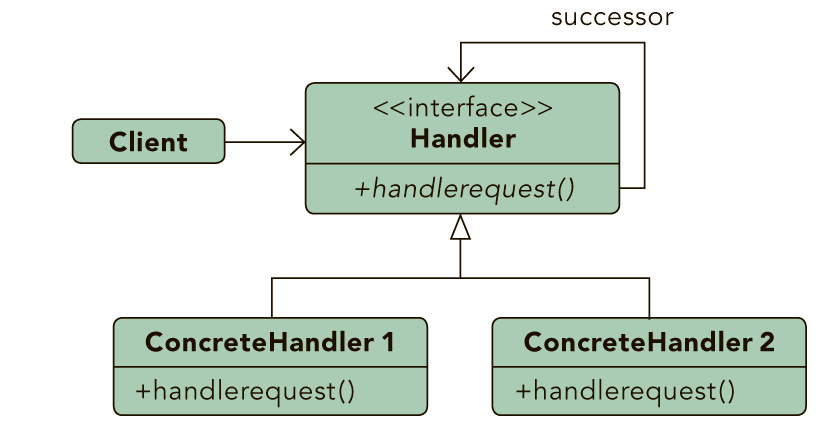

|
Design Patterns |
| By: Jason McDonald |
ABOUT DESIGN PATTERNS
This Design Patterns refcard provides a quick reference to
the original 23 Gang of Four design patterns, as listed in the
book Design Patterns: Elements of Reusable Object-Oriented
Software. Each pattern includes class diagrams, explanation,
usage information, and a real world example.
This Design Patterns refcard provides a quick reference to
the original 23 Gang of Four design patterns, as listed in the
book Design Patterns: Elements of Reusable Object-Oriented
Software. Each pattern includes class diagrams, explanation,
usage information, and a real world example.
Object Scope:Deals with object relationships that can be changed at runtime.
Class Scope:Deals with class relationships that can be changed at compile time.
CHAIN OF RESPONSIBILITY

Purpose
Gives more than one object an opportunity to handle a request
by linking receiving objects together.
Example
Exception handling in some languages implements this pattern.
When an exception is thrown in a method the runtime checks to
see if the method has a mechanism to handle the exception or
if it should be passed up the call stack. When passed up the call
stack the process repeats until code to handle the exception is
encountered or until there are no more parent objects to hand
the request to.
COMMAND

Purpose
Encapsulates a request allowing it to be treated as an object.
This allows the request to be handled in traditionally object
based relationships such as queuing and callbacks.
Example
Job queues are widely used to facilitate the asynchronous
processing of algorithms. By utilizing the command pattern the
functionality to be executed can be given to a job queue for
processing without any need for the queue to have knowledge
of the actual implementation it is invoking. The command object
that is enqueued implements its particular algorithm within the
confines of the interface the queue is expecting.
INTERPRETER

Purpose
Defines a representation for a grammar as well as a mechanism
to understand and act upon the grammar.
Example
Text based adventures, wildly popular in the 1980’s, provide
a good example of this. Many had simple commands, such
as “step down” that allowed traversal of the game. These
commands could be nested such that it altered their meaning.
For example, “go in” would result in a different outcome than
“go up”. By creating a hierarchy of commands based upon
the command and the qualifier (non-terminal and terminal
expressions) the application could easily map many command
variations to a relating tree of actions.
ITERATOR

Purpose
Allows for access to the elements of an aggregate object
without allowing access to its underlying representation.
Example
The Java implementation of the iterator pattern allows users to
traverse various types of data sets without worrying about the
underlying implementation of the collection. Since clients simply
interact with the iterator interface, collections are left to define
the appropriate iterator for themselves. Some will allow full access
to the underlying data set while others may restrict certain
functionalities, such as removing items.
MEDIATOR

Purpose
Allows loose coupling by encapsulating the way disparate sets of
objects interact and communicate with each other. Allows for the
actions of each object set to vary independently of one another.
Allows loose coupling by encapsulating the way disparate sets of
objects interact and communicate with each other. Allows for the
actions of each object set to vary independently of one another.
Example
Mailing list software keeps track of who is signed up to the
mailing list and provides a single point of access through which
any one person can communicate with the entire list. Without
a mediator implementation a person wanting to send a message
to the group would have to constantly keep track of who
was signed up and who was not. By implementing the mediator
pattern the system is able to receive messages from any point
then determine which recipients to forward the message on to,
without the sender of the message having to be concerned with
the actual recipient list.
MEMENTO

Purpose
Allows for capturing and externalizing an object’s internal
state so that it can be restored later, all without violating
encapsulation.
Example
Undo functionality can nicely be implemented using the
memento pattern. By serializing and deserializing the state of
an object before the change occurs we can preserve a snapshot
of it that can later be restored should the user choose to undo
the operation.
OBSERVER

Purpose
Lets one or more objects be notified of state changes in other
objects within the system.
Example
This pattern can be found in almost every GUI environment.
When buttons, text, and other fields are placed in applications
the application typically registers as a listener for those controls.
When a user triggers an event, such as clicking a button, the
control iterates through its registered observers and sends a
notification to each.
STATE

Purpose
Ties object circumstances to its behavior, allowing the object
to behave in different ways based upon its internal state.
Example
An email object can have various states, all of which will
change how the object handles different functions. If the state
is “not sent” then the call to send() is going to send the message
while a call to recallMessage() will either throw an error or do
nothing. However, if the state is “sent” then the call to send()
would either throw an error or do nothing while the call to
recallMessage() would attempt to send a recall notification
to recipients. To avoid conditional statements in most or all
methods there would be multiple state objects that handle the
implementation with respect to their particular state. The calls
within the Email object would then be delegated down to the
appropriate state object for handling.
STRATEGY

Purpose
Defines a set of encapsulated algorithms that can be swapped
to carry out a specific behavior.
Example
When importing data into a new system different validation
algorithms may be run based on the data set. By configuring the
import to utilize strategies the conditional logic to determine
what validation set to run can be removed and the import can be
decoupled from the actual validation code. This will allow us to
dynamically call one or more strategies during the import.
TEMPLATE METHOD

Purpose
Identifies the framework of an algorithm, allowing implementing
classes to define the actual behavior.
Example
A parent class, InstantMessage, will likely have all the methods
required to handle sending a message. However, the actual
serialization of the data to send may vary depending on the
implementation. A video message and a plain text message
will require different algorithms in order to serialize the data
correctly. Subclasses of InstantMessage can provide their
own implementation of the serialization method, allowing the
parent class to work with them without understanding their
implementation details.